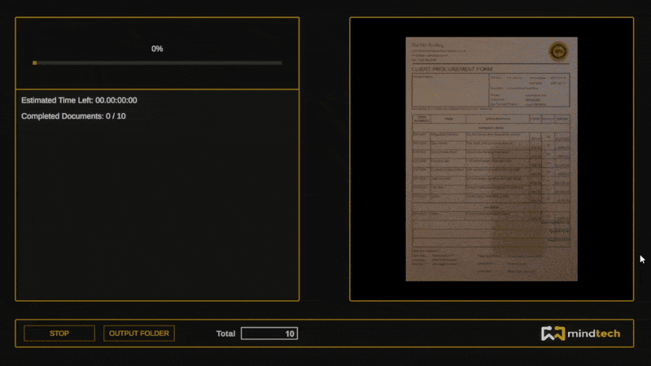
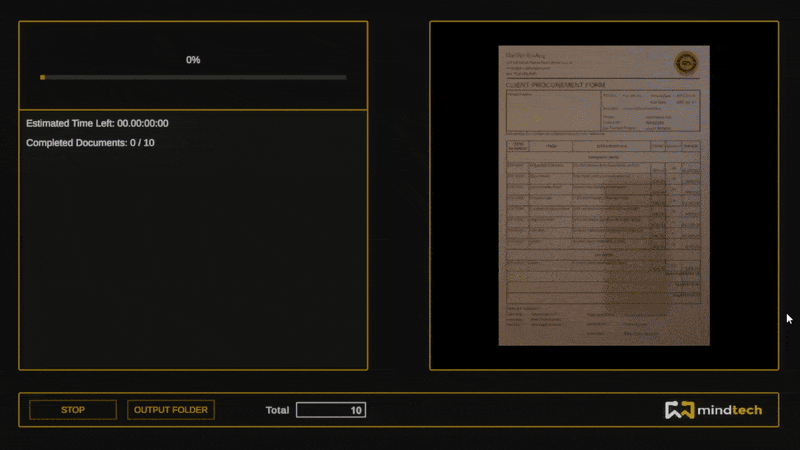

Unity Developer
Specializing in document generation, datasets, and automation tools.
Mindtech (2021 – Present)

I'm always working on exciting new projects in C#, Unity, and automation. Right now, my focus is on [mention key project, e.g., Chameleon AM Tool, SVG Importer, or Document Generator], developing scalable solutions and pushing technical boundaries.
Take a look at my latest work and ongoing developments.
Mindtech (2021 – Present)

Developed a synthetic dataset pipeline in Unity, leveraging HDRP to achieve photorealistic document rendering. Designed a system that simulates real-world conditions by integrating high-resolution textures, realistic shading, and advanced lighting techniques. This ensures datasets accurately reflect real document variations, aiding machine learning models in recognizing diverse document features under different environmental conditions.
Engineered a precise annotation system that guarantees pixel-perfect accuracy for machine learning dataset training. Implemented automated bounding box generation for text, images, and key document elements, ensuring alignment with real-world document layouts. The system supports structured annotation formats compatible with various ML frameworks, optimizing dataset usability for AI model training and validation.


Developed an advanced SVG import pipeline, allowing seamless document design integration from vector-based tools like Inkscape and Adobe Illustrator. This workflow enables:


 

Implemented a fully customizable rendering system, allowing fine-tuned control over environmental and visual parameters, including:
By incorporating these factors, the dataset improves model robustness, enabling AI to handle imperfect, real-world documents.

Implemented a system to simulate real-world document wear and tear, ensuring ML models are trained on realistic variations. These deformations impact both document appearance and annotation accuracy: